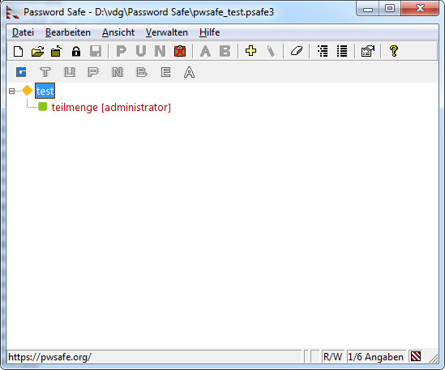

Das Menü Ansicht kontrolliert die vorhandenen Anzeigemöglichkeiten. Sie können umschalten zwischen den verschiedenen Darstellungsarten, wie Benutzernamen und Passwörter eines Eintrages dargestellt werden: entweder als einfache Tabelle oder als Baumstruktur. Sie können wählen ob Sie die Toolleiste anzeigen oder nicht, und wenn ja, ob Sie die klassische oder die moderne Darstellung verwenden wollen. Die Toolleiste selber kann angepasst werden. In der Baumdarstellung kann alles ausgeklappt werden, oder zugeklappt. Die Einträge können gefiltert werden nach irgendwelchen Kriterien. Die Schriftart für die Anzeige kann ausgewählt werden. Berichte zum Zusammenführen (merge), Vergleichen, Importieren und andere erweiterte Operationen können ebenfalls dargestellt werden.
Um die Toolleiste anzuzeigen oder zu verbergen, markieren Sie das Element Toolleiste anzeigen oder nicht.
Um die "klassische" oder die "moderne" Symbole für die Toolleiste zu setzen, wählen Sie das Element "Klassische Toolleiste" oder "Moderne Toolleiste" aus.
Die "Dragleiste" ist eine spezielle Toolleiste, die es erlaubt vom ausgewählten
Eintrag bestimmte Elemente zu "ziehen" (drag). Mit dem Bild in der Dragleiste können die
Elemente gezogen werden, die Sie in einem anderen Fenster kopiert haben wollen. Zum Beispiel,
um die Notizen von einem bestimmten Eintrag zu einem Fenster in einer anderen Anwendung zu
ziehen mit Hilfe der Dragleiste, wählen Sie den Eintrag aus, und ziehen Sie das Symbol "N"
aus der Dragleiste in die Anwendung. Wenn Sie die Maustaste loslassen, wird der Inhalt vom
Notizen-Feld in die Anwendung kopiert. In der Dragleiste sind die Elemente die im
ausgewählten Eintrag leer sind, ausgegraut.
Die 'Autom. Eingabe' Dragbar Tasten verhalten sich leicht anders: wenn man die Taste zu einem
Eingabefeld in einem anderen Fenster (z.B. der Browser) bewegt, startet Password Safe
die Autom. Eingabe an dieser Stelle.
Hinweis:
Um die Dragleiste anzuzeigen bzw. zu verbergen, markieren Sie das Element Dragleiste anzeigen oder nicht.
Klappt alle Gruppen aus, sodass sämtliche Einträge sichtbar sind. (nur in der Baumstruktur).
Klappt alle Gruppen zu (nur in der Baumstruktur).
"Unteransichten" sind vordefinierte Filter, die -wenn sie ausgewählt sind- nur die Einträge anzeigen wo die Kriterien stimmen.
Wie bei allen Filtern, kann man sie Löschen durch Doppel-Klick auf den rot weis gestreiften Indikator rechts unten in der Statuszeile. Diesen Indikator können sie in den folgenden Bildern sehen, wenn das Filter aktiv ist.
Wenn das Feld "Datenbank sofort nach Bearbeiten oder Einfügen speichern" in den Verwalten → Optionen → Sicherungen nicht markiert ist, werden die geänderten Felder nicht sofort abgespeichert, sondern farblich gekennzeichnet. Siehe hierzu auch das nächste Bild:
Die Übersicht mit allen Einträgen
Durch Markieren dieses Menüpunktes werden -zur Übersicht- ausschließlich die geänderten Felder angezeigt.
Die Übersicht, ausschließlich der geänderten Einträge.
Bemerkung: Solange überhaupt geänderte aber noch nicht abgespeicherte Einträge vorhanden sind, erscheint in der Statuszeile ein "*".
Durch Markieren dieses Menüpunktes werden -zur Übersicht- ausschließlich die Einträge angezeigt, die ein Ablaufdatum haben. Es spielt dabei keine Rolle ob das Ablaufdatum schon vorbei ist, oder erst noch kommt.
Wenn gar keine Einträge mit Ablaufdatum vorhanden sind, ist dieser Menüpunkt ausgegraut.
Wenn sie dieses auswählen, werden nur die Einträge angezeigt die beim letzten Suchen gefunden wurden. Wenn die Suchen-Aktion noch nicht statt gefunden hat oder gelöscht wurde, wird dieser Punkt im Menü ausgegraut. Wenn die Suchen-Leiste noch sichtbar war beim Einschalten dieses Kriteriums, wird diese weggeschaltet, weil währenddessen keine neue Such-Aktion stattfinden sollte. Such nächster (F3) und Such vorheriger (Umsch-F3) stehen weiterhin zur Verfügung.
Hinweis: wenn dieses Filter aktiv ist -es zeigt ja die Einträge an die bei der letzten Suchen-Aktion gefunden wurden- wird die Such-Aktion nicht wiederholt. Zum Beispiel:
Ein "Filter" ist ein Kriterium (oder ein Satz an Kriterien) mit dem ein Eintrag übereinstimmt oder nicht. Password Safe erlaubt es Filter zu definieren und nur die Einträge anzuzeigen die mit einem gegebenen Filter übereinstimmen. Für mehr Informationen wie Filter zu definieren und verwenden sind, siehe hier.
Wählen Sie eine andere Schriftart aus, um Einträge in der Tabellenansicht oder Baumstruktur darzustellen. Dies gilt ebenso für die Darstellung der Passwörter im Menü Einfügen bzw. Bearbeiten.
Sie können ebenfalls die Schriftart für die virtuelle Tastatur festlegen. Achten Sie darauf dass diese Schriftart Unicode Zeichen darstellen können muss. Die unterstützte Schriftarten sind: "Arial Unicode MS" (kommt mit Microsoft's Office suite), "Arial Unicode" und "Lucida Sans Unicode". Sie können aber auch eine andere Schriftart auswählen mit dem angebrachten Menüpunkt.
Wenn Sie die Berichte vom Vergleichen, Exportieren, Importieren, Zusammenführen und Synchronisieren auf Festplatte abspeichern, werden sie im selben Verzeichnis wie die Datenbank abgespeichert. Bei wiederholten Aktionen und nochmaligem Abspeichern auf Festplatte, wird der alte Bericht unweigerlich überschrieben. Die Berichte können zu einem späteren Zeitpunkt eingesehen werden, solange die Datenbank im selben Verzeichnis steht.
Durch Betätigen der Taste F5 oder durch Drücken dieses Menüpunktes kann die Anzeige der vorhandenen Daten aktualisiert werden.